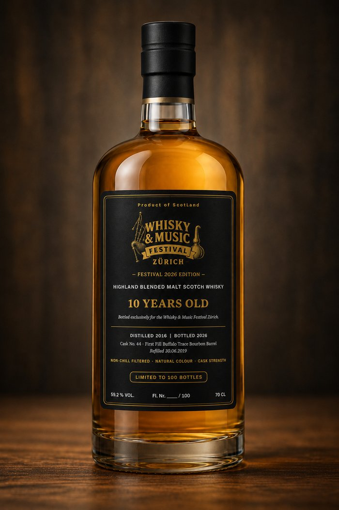

Zollfreier Whisky-Shop mit über 670 Abfüllungen, 8 Kilometer vor Samnaun – und seit vielen Jahren Gastgeber legendärer Tastings am Zürichsee.
Whisky & Music Festival 2026
Vorverkauf über Eventfrog · Vergünstigt für Kiltträger:innen CHF 18.- (Abendkasse)
Aussteller
Von internationalen Raritäten bis zu Schweizer Whisky-Spezialitäten – aussergewöhnliche Abfüllungen und spannende Entdeckungen.
Zollfreier Whisky-Shop mit über 670 Abfüllungen, 8 Kilometer vor Samnaun – und seit vielen Jahren Gastgeber legendärer Tastings am Zürichsee.

Seit fast 35 Jahren sind unsere Marken unser Markenzeichen – von GlenAllachie über Arran bis Tomatin.

Seit über 30 Jahren auf der Suche nach seltenen Destillaten aus aller Welt – rund 3'000 Premium-Spirituosen im Sortiment.

Neuste Abfüllungen des Independent Bottlers Meadowside Blending sowie der irischen Destillerie Lough Gill.

Unabhängiger Fachhändler in dritter Generation mit rund 2'000 Whiskys aus aller Welt.

Die Institution der Schweizer Whisky-Szene – exklusiv am Festival, u.a. mit Redbreast, The Macallan und Glenfiddich.
Programm
Freitag 16–22 Uhr, Samstag 14–22 Uhr — Konzerte bis 23 Uhr.
Start des Whisky Festivals — die Musik beginnt ab 17:00 Uhr.
Schottischer Dudelsack-Auftakt zur Messe-Eröffnung.
Irish Folk trifft Rock und einen Hauch Jazz — energiegeladener Fusion-Sound.
Zum Zuschauen und Mitmachen.
Zweiter Auftritt des Abends.
Balladen und mitreissende Konzertmomente.
Start des Whisky Festivals — die Musik beginnt ab 16:00 Uhr.
Musikalische Eröffnung des zweiten Festivaltags.
Traditionelle keltische Melodien und Eigenkompositionen.
Live-Konzert im Musiksaal Foyer OG.
Indie Irish Folk Rock aus Irland — mitreissende Eigenkompositionen und Klassiker.
Masterclasses
Kleine Gruppen, grosse Geschichten — geführt von Brand-Ambassadors und internationalen Whiskyexperten.
Tickets
Vorverkaufspreise gelten über Eventfrog bis eine Stunde vor Einlass; an der Abendkasse gelten die höheren Preise.
Merke dir schon jetzt: 26.–27. November 2027 und 24.–25. November 2028 — das Whisky & Music Festival findet jährlich am letzten Novemberwochenende statt.
Exklusiv am Festival
Ein einziges Fass, von Hand ausgesucht — nur 100 nummerierte Flaschen tragen unser Logo.

Etikett illustrativ, noch nicht final.
Fass No. 44 ist zehn Jahre alt und reifte zuletzt in einem First Fill Buffalo Trace Bourbon Barrel, bevor wir es in Fassstärke abgefüllt haben — unverdünnt, ungefärbt und ohne Kühlfilterung. Nur 100 nummerierte Flaschen tragen das Festival-Logo, erhältlich ausschliesslich an unserem Stand während des Festivals, solange der Vorrat reicht.
Location
Mitten am Stauffacher — gut erreichbar mit Tram und Bus.